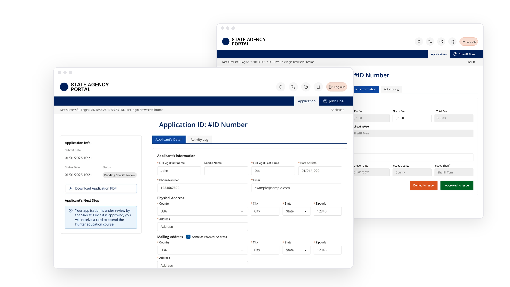
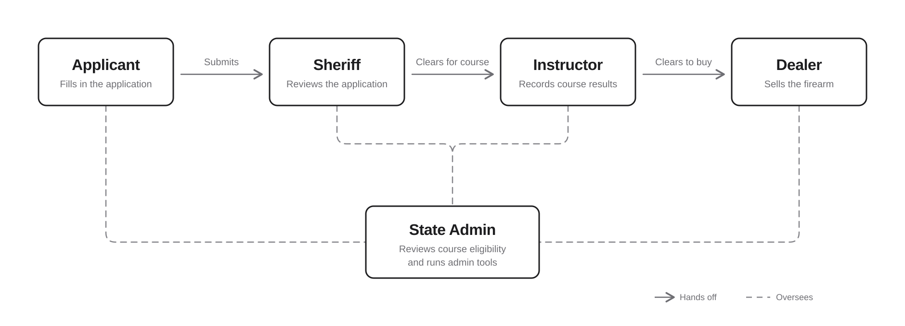
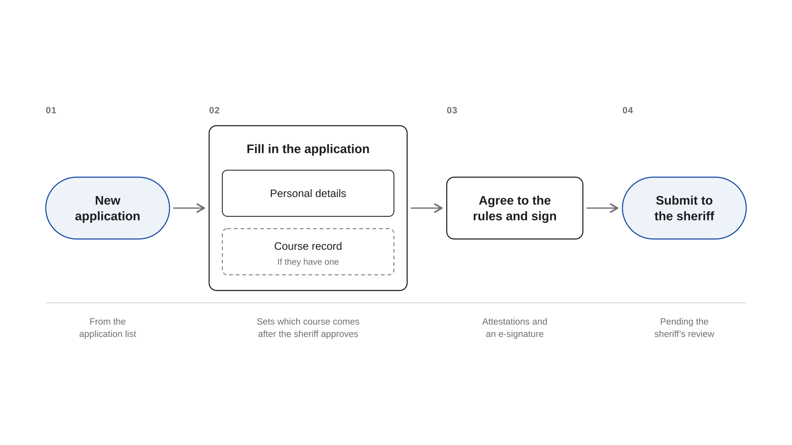
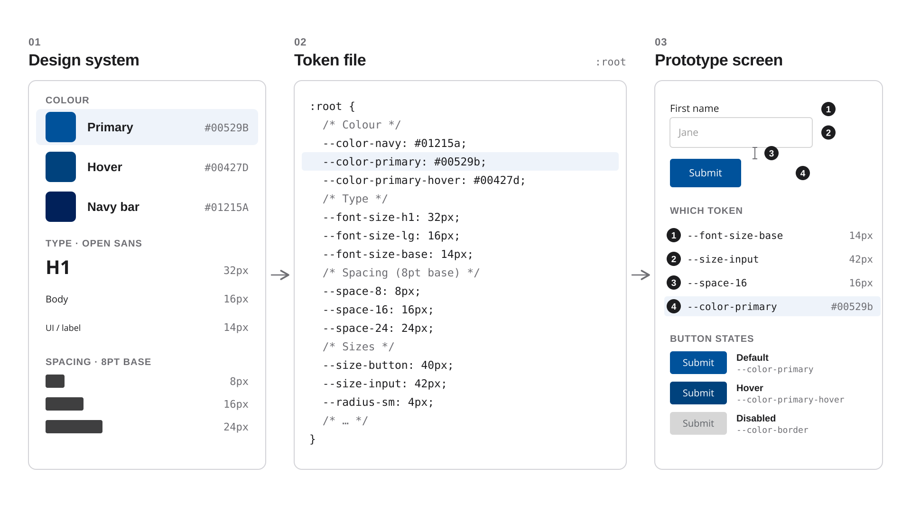

U.S. State Government Project · Bid Prototype · 2026
Winning a $1.6M+ State Contract with a Clickable Prototype Built in 48 Hours

01 Overview
A new state agency, a five-party permit process none of us knew, and 48 hours' notice. Our last bid of similar size took five days of static Figma screens, and we lost it. This time I sent the agency a prototype they could click through.
A first contract with a new state agency.
A clickable prototype for all four outside roles. Our last bid of similar size took 5 days of static screens (−60%).
- My role
- Product Designer & Taiwan-side PM
Designed and built the prototype, confirmed the business rules with our US PM, agreed scope with leadership. - Timeline
- January 2026 – April 2026
48-hour bid, then 11 weeks of design and build after the win. Now live. - Team
- Engineers (3) · Project managers (2) · Product designer (1) · Customer service (1)
02 Challenge
The agency asked for a design proposal. I wanted ours to be the first draft of the product. A first contract with a new state agency, and a way into its other departments. I heard about the bid with the deadline already close, the agency sent PDFs, and nobody on the team had worked in this domain. Our last bid of similar size was 5 days of static Figma screens, and we lost it. So before reading a single document, I decided this one would be a clickable HTML prototype built with Claude Code: a file that shows the client what we understood, and that we can build from if we win. The company also wanted to adopt an AI development workflow.
Send a design proposal in 48 hours
The agency's brief. It had to show we understood a five-party permit process we had only read about.
Make it something we could build from
Not in the brief; my own aim. A design proposal usually stops mattering once the bid is decided. I wanted a file the agency could click through, and the starting point for delivery if we won.
03 Solution
Two deliverables: a UI prototype the agency could click through, and design tokens that made it buildable.
04 Research
No interviews and no process audit: the business rules existed only in the agency's documents. I gave Claude the agency's PDFs and had it pull out every role, every step and the rules between them.
Then I checked its output against the documents myself, before drawing any screen. The screens came from rules I had read in the source, not from Claude's summary alone.

05 Design
Three steps, each feeding the next: the agency's documents into a UI flow, our design system into tokens, then the flow and the tokens into a clickable prototype.
Step 1Turn the agency's documents into a UI flow before drawing any screen
- What I saw
- One step depends on another, and the rules for that order were spread across PDFs.
- What I changed
- Lay out how the roles relate and the applicant's full path first, then split it into each role's flow, instead of drawing each role's screens straight from the documents.
- Why this way
- The order decides what each screen shows, including which course comes after the sheriff's approval.

Step 2Turn our shipped design system into tokens, so the prototype could be built fast
- What I saw
- Every role's flow still had to become screens, and there were 48 hours for all of it.
- What I changed
- Before building any screen, Claude turned the design system we had already shipped into tokens, CSS variables for colour, type and spacing.
- Why this way
- With the visual rules settled once, building each screen was a matter of applying them, not redesigning. 48 hours of generated screens still looked like one product, and engineers could later take the same file into production.

Step 3Build the clickable prototype from the flow, on the tokens
- What I saw
- A flow for every outside role and a token file, and a proposal the agency should be able to click through.
- What I changed
- A clickable HTML prototype built with Claude Code from my flows, on the tokens. I clicked through each version as every role and adjusted it until it did what the documents required.
- Why this way
- A working file shows the client what we understood, and it is something we can build from if we win.
- Trade-off
- Happy path only, for every outside role from applicant to dealer. Left out: the sheriff withdrawing an approval, the agency's review of training records, reports and settings. I agreed that scope with our US PM and leadership before building.
06 Validation
Clicked through as every role
I went through each version myself as every role and adjusted it until it did what the documents required.
Not checked with the agency before the bid
We had PDFs only and no access to users. The rules were checked against the documents, and checking them with the agency came after the win.
What that gap missed
I assumed the whole application locks after review. The sheriff had approved it, so it seemed safe.
- Personal details
- Locks after review, as I assumed.
- Training history
Locks after review.Stays editable.
The agency corrected it when we started building. The fix was small, just which fields are read-only. But I couldn't have confirmed this rule in 48 hours. The prototype gave the agency something concrete to correct.
07 Outcome
The prototype won the contract, then became the starting point for delivery.
- Business
- $1.6M+ awarded, a first contract with a new state agency. The agency could click through all four outside roles instead of reading static screens.
- Delivery
- Live in 11 weeks. Engineers built from the bid's screens and reused most of the prototype's token file, the CSS variables for colour, type and spacing, so delivery didn't start from zero.
- Speed
- 5 days → 48 hours of concept work, against our last bid of similar size, which used static Figma screens.
Reflection
Speed moved the risk. It didn't remove it. AI got me from documents to a working prototype in two days, but some of the rules in it were guesses, and nobody could tell which. The training-record rule was one of them.
Next time I'd send an assumption list with the prototype: the rules we weren't sure of, written as questions for the agency. Our guesses would become questions for the client before kickoff, not surprises during the build.